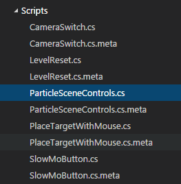

Unity Development with VS Code
Visual Studio Code can be a great companion to Unity for editing and debugging C# files. All of the C# features are supported and more. In the screen below, you can see code colorization, bracket matching, IntelliSense, CodeLens and that’s just the start.

Read on to find out how to configure Unity and your project to get the best possible experience.
Setup VS Code as Unity Script Editor
Open up Unity Preferences, External Tools, then browse for the Visual Studio Code executable as External Script Editor.
The Visual Studio Code executable can be found at
/Applications/Visual Studio Code.appon OSX,C:\Program Files (x86)\Microsoft VS Code\Code.exeon Windows by default.
Unity has built-in support for opening scripts in Visual Studio Code as an external script editor on Windows and OSX. Unity will detect when Visual Studio Code is selected as an external script editor and pass the correct arguments to it when opening scripts from Unity. Unity will also set up a default .vscode/settings.json with file excludes, if it does not already exist (from Unity 5.5 Release notes).
Editing Evolved
With the solution file selected, you are now ready to start editing with VS Code. Here is a list of some of the things you can expect:
- Syntax Highlighting
- Bracket matching
- IntelliSense
- Snippets
- CodeLens
- Peek
- Go-to Definition
- Code Actions/Lightbulbs
- Go to symbol
- Hover
Two topics that will help you are Basic Editing and C#. In the image below, you can see VS Code showing hover context, peeking references and more.

Unity Extensions
The community is continually developing more and more valuable extensions for Unity. Here are some popular extensions that you might find useful. You can search for more extensions in the VS Code Extension Marketplace.
The extensions shown above are dynamically queried. Click on an extension tile above to read the description and reviews to decide which extension is best for you. See more in the Marketplace.
Next Steps
Read on to learn more about:
- Basic Editing - Learn about the powerful VS Code editor.
- Code Navigation - Move quickly through your source code.
- Debugging - how to use the debugger with your project
- C# - learn about the C# support in VS Code
Common Questions
Q: I don’t have IntelliSense.
A: You need to ensure that your solution is open in VS Code (not just a single file). Open the folder with your solution and you usually will not need to do anything else. If for some reason VS Code has not selected the right solution context, you can change the selected project by clicking on the OmniSharp flame icon on the status bar.

Choose the -CSharp version of the solution file and VS Code will light up.

Q: How can I change the file exclusions?
A: Unity creates a number of additional files that can clutter your workspace in VS Code. You can easily hide these so that you can focus on the files you actually want to edit.
To do this, add the following JSON to your workspace settings.
|
As you can see below this will clean things up a lot…
| Before | After |
|---|---|
|  |  |
Q: How can I debug Unity?
A: Install the Debugger for Unity extension.